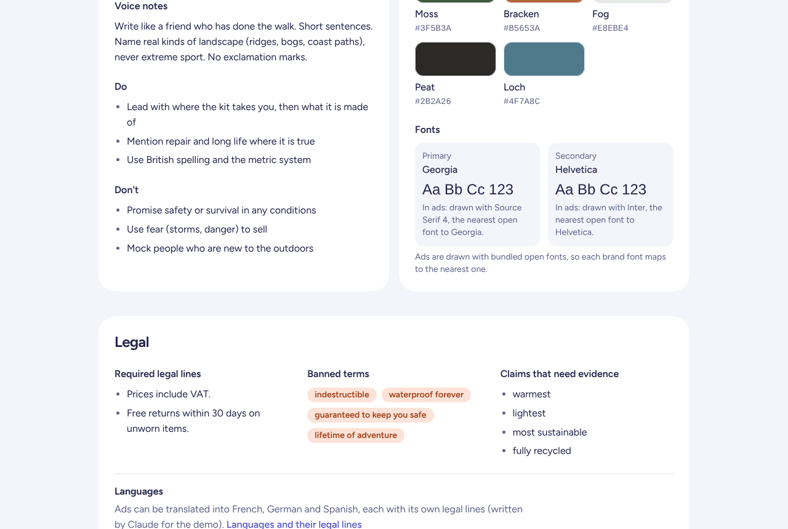
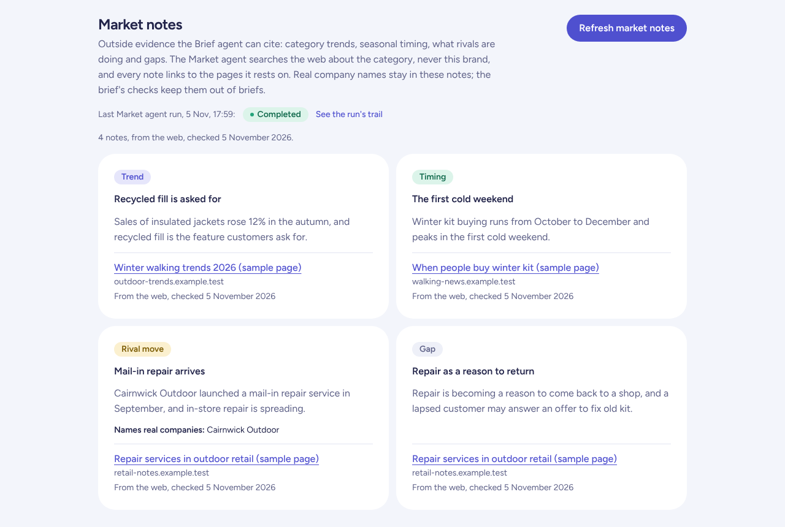
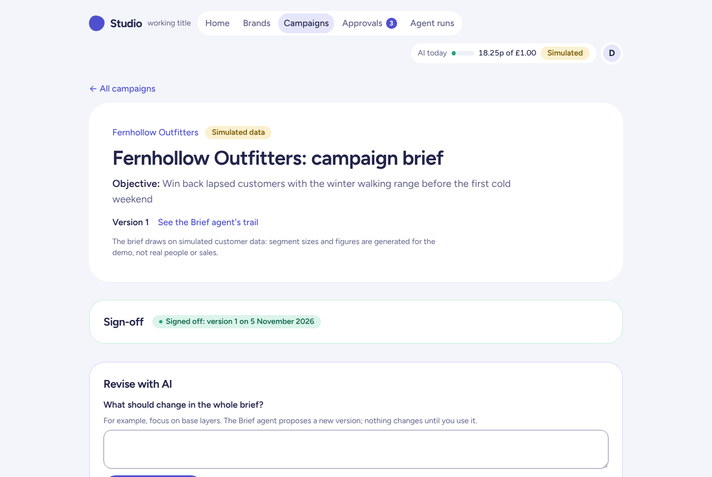
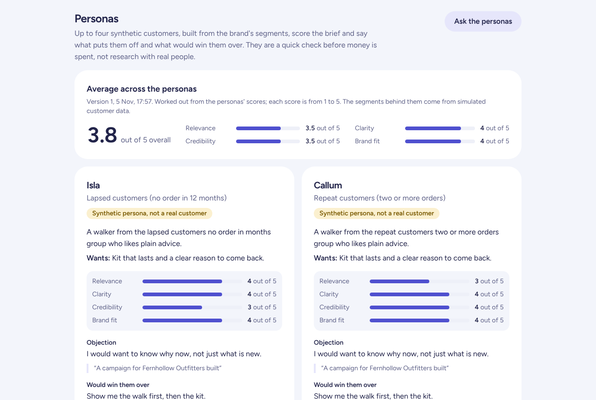
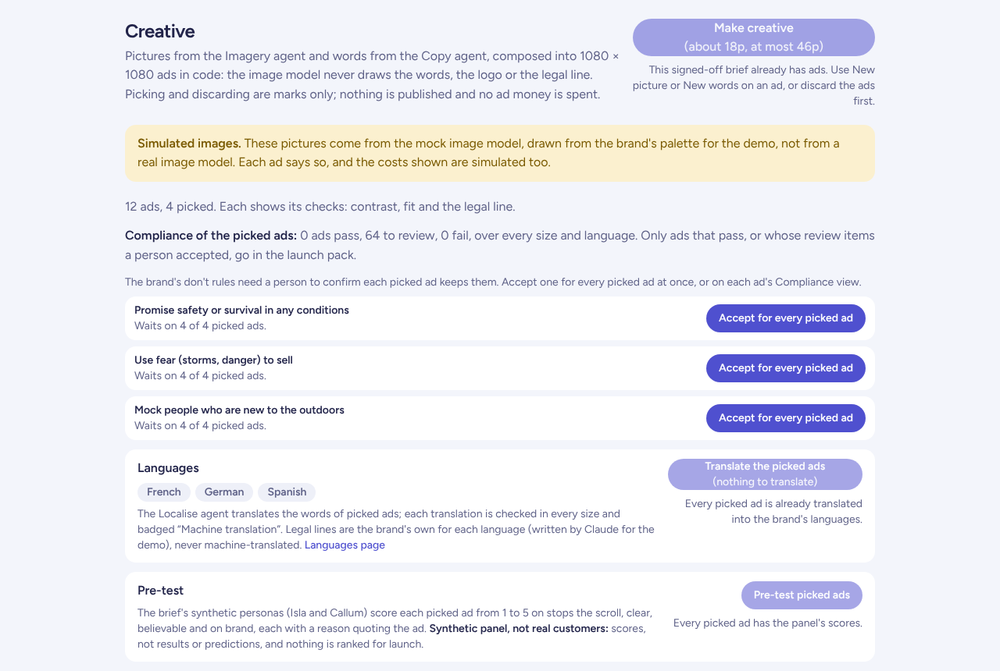
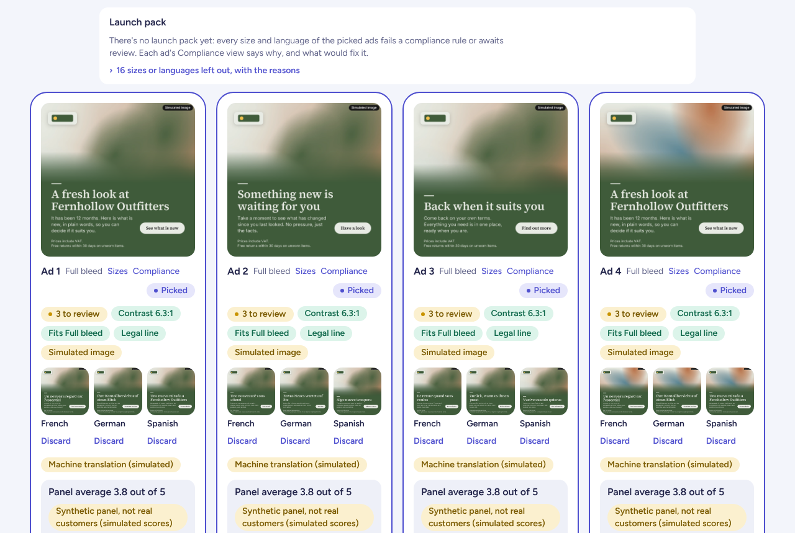
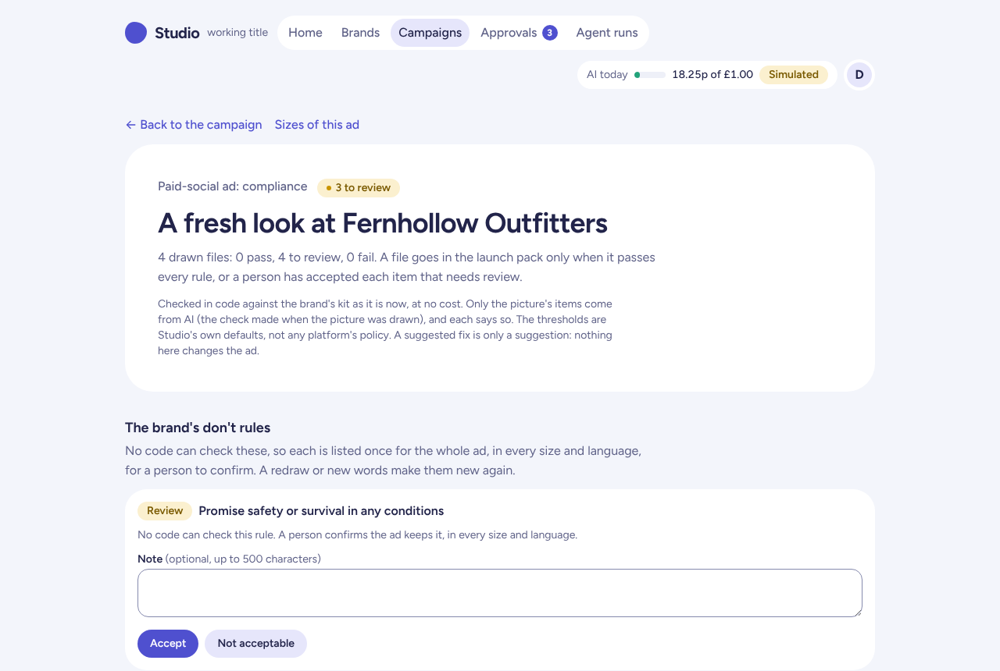
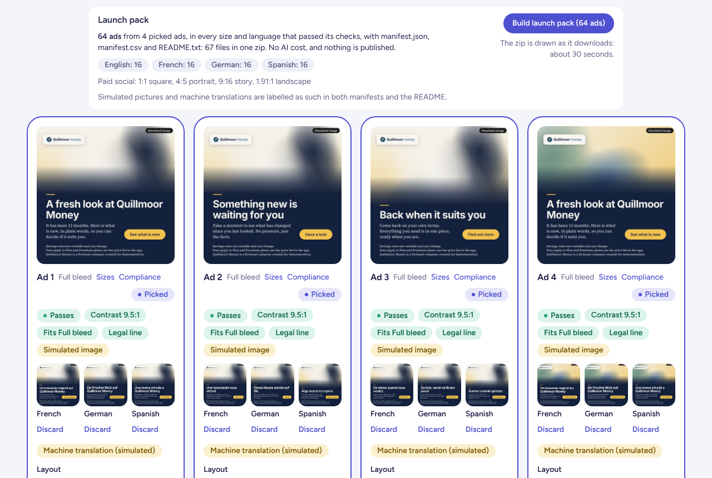
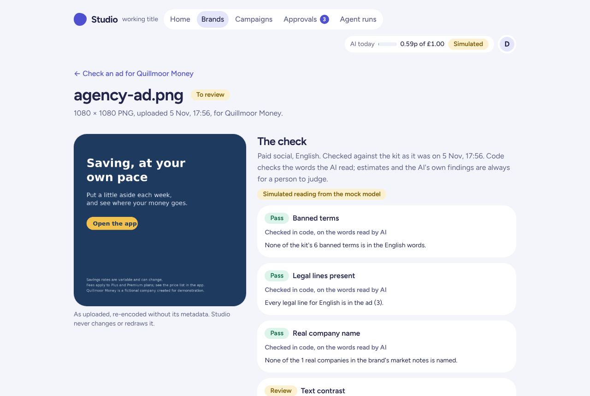
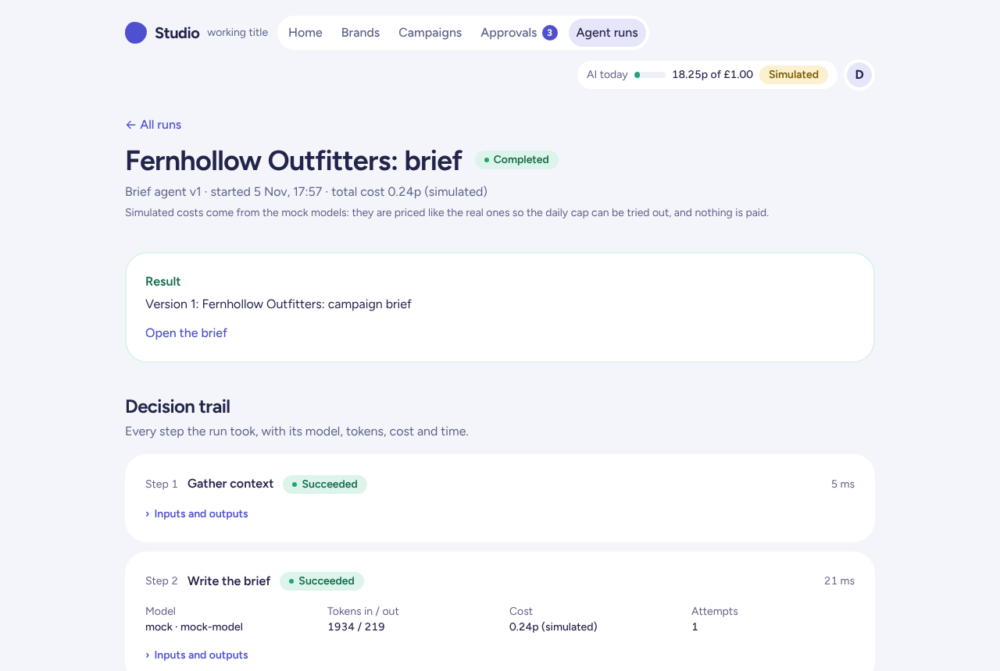

Studio, screen by screen
Studio is a web app where AI agents take a marketing campaign from a one-line objective to checked, on-brand ads in every size and language. This walkthrough follows one campaign through it and marks four things on each screen: what the AI does, where a person decides, the guardrails, privacy, and security design, and how each part was tested. Use the filter to follow one thread at a time; select a numbered marker to find its note.
The screens were taken from the app running locally with its free mock model, which is how its automated tests run. The brands are fictional and their data simulated, and the pictures, readings, and costs from the mock model are labelled as simulated on the screen, as they are in the app. Studio is a non-commercial demonstration, inspired by multi-agent campaign platforms I saw at Elsewhen and built independently, with none of Elsewhen's code, data, or designs.
- The brand kit every agent reads
- Market notes, with their sources
- A brief, signed off by a person
- Synthetic personas test the brief
- Creative, compliance, and the decisions left to people
- The gallery, and a launch pack that waits
- One ad's compliance view
- A launch pack, once the checks are settled
- Checking an ad made outside Studio
- The decision trail behind every run
- How it was tested
The brand kit every agent reads
Each brand has a kit in the shared Business Context store: its voice, palette, fonts, legal lines, banned terms, claims that need evidence, and do and don't rules. Every agent works from it, and every check is run against it.

Swipe the screenshot sideways to see all of it.
- 1Human in the loop
Rules only a person can judge. A don't rule such as "use fear to sell" cannot be checked reliably by code. Each one is listed against every picked ad for a person to confirm (screen 5).
- 2Guardrails, privacy, and security
Legal lines are copied, never written. Required legal lines are copied into every ad by code, word for word. No model writes or rewrites them, so no instruction can remove them.
- 3Guardrails, privacy, and security
Banned terms, checked in code. Every ad is checked for the kit's banned terms, in every size and every language it is translated into.
- 4Guardrails, privacy, and security
Claims that need evidence. A brief that says "warmest" or "most sustainable" must cite evidence for it from the context store, or the brief's checks refuse it.
- 5Guardrails, privacy, and security
Fonts drawn in code. Ads are drawn in code with bundled open fonts, each brand font mapped to the nearest one. The image model never draws text, so the words are drawn exactly as written.
Market notes, with their sources
The Market agent searches the web about the category, never the brand, and writes short notes the Brief agent can cite. Every note links to the pages it rests on.

Swipe the screenshot sideways to see all of it.
- 1AI capability
A web-searching agent, on a budget. On production the Market agent (Claude Sonnet) runs up to three searches. A refresh costs up to about 20p and counts against the daily cap.
- 2How it was tested
Every figure is checked against its page. Code reads each cited page and refuses a note whose figures are not on it. On production, every figure in the measured run was found on its cited page.
- 3Guardrails, privacy, and security
Real company names stay here. Notes may name real companies, flagged as such. Before the Brief agent sees the notes, those names are replaced with "a named company", and the brief's checks refuse any of them.
- 4Guardrails, privacy, and security
Simulated in this demo. These screens use the free mock model, so the notes link to sample pages. The real agent links to the pages it actually read.
A brief, signed off by a person
A one-line objective becomes a structured brief that cites the context it comes from. Nothing creative happens until a person signs a version off.

Swipe the screenshot sideways to see all of it.
- 1AI capability
From one line to a brief. The Brief agent (Claude Sonnet on production) writes the brief from the brand's context store. Every insight cites a context item, and code refuses a citation, figure, or claim that its source does not support.
- 2Human in the loop
Sign-off is a person's decision. A version is sent for sign-off and approved in the approvals inbox. Creative can start only from a signed-off brief, and the workflow checks that again before it spends anything.
- 3Guardrails, privacy, and security
Simulated data, labelled. The demo brands and their customers are fictional, and the page says so wherever their data is shown.
- 4Human in the loop
Revise, and keep every version. The brief can be revised with AI, as a whole or a section at a time, or edited by hand. Each change makes a new version; nothing is overwritten.
- 5Guardrails, privacy, and security
Every run has a trail. Each agent run records its inputs, outputs, model, tokens, cost, time, and outcome (screen 10).
Synthetic personas test the brief
At sign-off, four synthetic customers built from the brand's segments score the brief and say what would put them off. It is a quick check before money is spent, not research with real people.

Swipe the screenshot sideways to see all of it.
- 1AI capability
Started automatically at sign-off. The persona review and the test plan (Claude Haiku on production) start as soon as the brief is signed off. Each cost under 0.1p on production.
- 2Guardrails, privacy, and security
Labelled as synthetic. Every persona says it is synthetic, not a real customer, and the scores are presented as a check on the brief, never as a forecast.
- 3AI capability
Objections in the brief's words. Each objection quotes the part of the brief it is about, so a person can see exactly what prompted it.
- 4Human in the loop
Asked again on a click. A person can ask the personas again after revising the brief. Nothing in the brief changes as a result.
Creative, compliance, and the decisions left to people
Making creative runs the Imagery and Copy agents in parallel and composes the ads in code. Above the gallery, the campaign shows what still needs a person.

Swipe the screenshot sideways to see all of it.
- 1Guardrails, privacy, and security
The cost is shown before the click. "About 18p, at most 46p": the typical and worst-case cost. Before the call, the worst case is reserved against the daily cap, so parallel runs cannot overshoot it.
- 2Guardrails, privacy, and security
Simulated images, said plainly. In this demo the pictures come from the mock image model. Each one is stamped "Simulated image" in its pixels, in every size.
- 3Guardrails, privacy, and security
Nothing passes on a model's say-so. Every picked ad is checked in every size and language. Only files that pass, or whose review items a person has accepted, can go into the launch pack.
- 4Human in the loop
A person confirms the don't rules. Each don't rule waits on every picked ad until a person accepts it, for all picked ads at once or one by one. The decision is recorded with who made it and when.
- 5Human in the loop
Machine translation, human legal lines. The Localise agent translates the words and badges them "Machine translation". Legal lines are never machine-translated: each language has its own in the brand's kit. For the demo brands, Claude wrote them, and they are marked as written for the demo.
- 6Guardrails, privacy, and security
A synthetic panel, never a prediction. The pre-test panel's reasons may hold no figures or predictions, and the panel is labelled "Synthetic panel, not real customers".
The gallery, and a launch pack that waits
Twelve ads from four pictures and three sets of words, four of them picked and translated. The launch pack refuses to build until the review items are settled.

Swipe the screenshot sideways to see all of it.
- 1Guardrails, privacy, and security
No pack until the checks are settled. Every size and language of the picked ads is still waiting for review, so there is no launch pack yet, and the card says why.
- 2Human in the loop
The reasons, one click away. The card lists the 16 sizes or languages left out, each with its reason, so a person knows what to look at.
- 3Guardrails, privacy, and security
The image model never draws text. The model supplies only the picture. Headline, body, button, logo, and legal lines are composed in code, so they are drawn exactly as written, in the brand's colours and the nearest open font to its own. A vision check on each picture redraws it once if it contains text, then drops it.
- 4How it was tested
Contrast measured before drawing. Contrast is worked out before an ad is drawn, and an ad that cannot reach AA (4.5:1 for words) is refused rather than shipped.
- 5AI capability
Every translation, re-checked. Each translation is drawn and checked in every size on its own, because translated words are often longer than the English and can break a layout that worked.
- 6Human in the loop
Review items, counted on the card. "3 to review" on each ad is the three don't rules a person has not yet confirmed.
One ad's compliance view
Each ad has its own compliance view: every rule, in every size and language, as pass, review, or fail, with the reason and a suggested fix.

Swipe the screenshot sideways to see all of it.
- 1Human in the loop
Review, not pass. Until a person has confirmed the don't rules, the ad is "to review". It never shows as passed because a model saw nothing wrong.
- 2Guardrails, privacy, and security
Every size and language. The same checks run on every drawn file: contrast, legal lines, banned terms, logo clear space, text density, the safe zones on 9:16 stories, and the simulated-image label.
- 3How it was tested
Studio's own thresholds, stated. The thresholds are Studio's own defaults, kept in one configuration file, and the page says they are not any ad platform's policy.
- 4Human in the loop
Accept, or not acceptable. A person accepts the rule or marks it not acceptable, with an optional note. Decisions are append-only, with who decided and when.
A launch pack, once the checks are settled
For the second demo brand, the review items have been accepted: 64 ads, four picked ads in the four social sizes and four languages, in one zip.

Swipe the screenshot sideways to see all of it.
- 1Guardrails, privacy, and security
Only what passed. The pack holds only files that passed, or whose review items a person accepted, with a manifest in JSON and CSV and a README. It has no AI cost.
- 2Human in the loop
Nothing is published. Building the pack downloads a zip. Studio never publishes an ad or spends media money; that stays with a person.
- 3How it was tested
Measured in CI. A 64-ad demo pack took 19.7 seconds from click to complete download in CI, at 22.6 MB.
- 4Guardrails, privacy, and security
Labels travel with the files. Simulated pictures and machine translations are labelled in both manifests and the README, so the label survives outside Studio.
- 5How it was tested
Passes, in every size. Each picked ad here passed every rule checked in code, in every size and language, and a person accepted its don't rules, before it was allowed into the pack.
Checking an ad made outside Studio
An agency's PNG can be checked against the same kit. An AI model reads the words and estimates where they sit; code then checks what was read, and each finding says how it was found.

Swipe the screenshot sideways to see all of it.
- 1Human in the loop
To review, by a person. Estimates, and anything the AI flags, are left for a person to judge. Studio never changes or redraws the uploaded ad.
- 2Guardrails, privacy, and security
The file is treated as untrusted. Its contents decide what it is, never its name: PNG or JPEG only, up to 4 MB and 4096 pixels a side, refused if it carries script or web code, and re-encoded without its metadata.
- 3AI capability
AI reads, code checks. The Read ad agent (Claude Haiku with vision on production) reads every line of text. Banned terms, legal lines, and real company names are then checked in code on those words.
- 4Guardrails, privacy, and security
Simulated reading, labelled. This screen used the mock model, which returns a fixed reading, and says so. The ad was made to match it.
- 5Guardrails, privacy, and security
Real names fail. An uploaded ad that names a real company from the brand's market notes fails this check.
The decision trail behind every run
Every agent run has a page showing each step it took, with the model, tokens, cost, time, and number of attempts, and its inputs and outputs.

Swipe the screenshot sideways to see all of it.
- 1Guardrails, privacy, and security
Traceable to the token. Each step records its model, tokens, cost, time, and outcome. The cost in the trail is read from the spending ledger, so the two always match.
- 2How it was tested
One repair, then stop. If a model's answer comes back in the wrong shape, Studio tries one repair. If that fails, the run stops and says why. Every attempt is kept, with its raw reply.
- 3Guardrails, privacy, and security
Simulated costs, labelled. With the mock model, costs are simulated at a fixed test price (pictures at the real price), so the daily cap can be tried out without spending anything.
- 4AI capability
Grounded in the brand's context. The brief starts by gathering the brand's context items. The agent can cite only those, and code checks every citation.
How it was tested
The green notes above show where each part was tested. These are the methods behind them, from the project's decision records, backlog, and sign-off pages.
Every agreed case, with how it is checked
From Sprint 7, each agreed test case is listed with how it is checked. CI records the browser tests, and the demo page the sprint is signed off from is built from those results and recordings. A browser case shows Passed only if the test proved it in that build.
Result. Sprint 8 was signed off with 12 browser passes, 14 other CI passes, 3 hand checks still to be done on production, and 0 failures. Across Sprints 7 and 8, 66 cases are listed.Tests checked by an agent that did not write them
A separate QA agent, which had not built the work, checks the tests against the agreed cases before the demo.
Result. In Sprint 7 it found 12 problems with the tests, including a browser test that could pass on a broken implementation. All 12 were fixed before the demo.Security and correctness, reviewed every sprint
A separate reviewer agent reads each sprint's changes against the project rules and ranks its findings with a file, a line, and a fix. It does not edit code.
Every agent has a prompt-injection test
Brand rules, briefs, and the words read from an uploaded ad are written by people, so they are passed to models as data. Each agent has a test that plants instructions in its input, and code checks every answer whatever the model says.
Result. Answers that break the schema, cite outside their context, or slip in a real company name, a testimonial, or an unsupported figure are refused in code.Every table, tested across workspaces
Every business table carries a workspace and row-level security in the database, and the app reaches data only as the signed-in person. Each new table gets a test that tries to read another workspace's rows.
Result. The database itself refuses another workspace's rows, so most app bugs cannot leak data; one known gap, F-30, is on the backlog. A fresh throwaway database branch is built from the migrations in CI on every push.Checked on production, by hand
CI uses the free mock model, so anything that depends on real AI output, such as translation quality or picture judgement, is checked by hand on production after the deploy, from a short written test pack.
Result. Running the real models found and fixed four rounds of Market agent issues and three Imagery issues. No evaluation against the real models has been run yet; the first is top of the backlog.The full case study (PDF) ↓How I run sprints with AI →The safety techniques behind it →